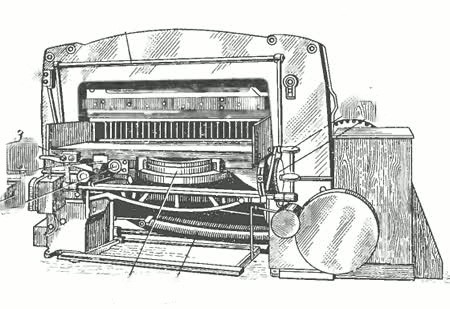
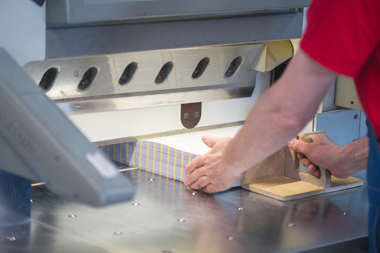
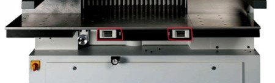

Описание устройства, история и применение
Промышленный резак для бумаги — это станок для точной и повторяемой резки бумаги, картона и других листовых материалов по заданным размерам. В полиграфии он играет роль «точки истины»: качество конечного изделия часто определяется тем, насколько ровно и точно нарезаны листы, стопы, блоки и заготовки. Современный резак — это не «большой нож», а комплексная машина, где механика, привод, измерительная система и безопасность работают как единое целое.

1. Коротко о назначении
Главная задача резака — быстро и точно разрезать материал на формат: от нескольких листов до высокой стопы. Типичные операции: подрезка краёв, резка в размер, раскрой пачек на несколько частей, подготовка книжных блоков, подрезка обложек, резка картонных заготовок для упаковки, резка самоклеящихся материалов и тонких пластиков.
Если печатная машина даёт «картинку», то резак даёт «геометрию». Именно поэтому в типографиях и переплётных цехах резак — одна из ключевых установок послепечатной обработки.
2. История создания и автор (конструктор)
Потребность в ровной резке бумаги появилась сразу, как только бумага стала массовым материалом для книг, газет и деловых документов. Долгое время резали вручную: ножами, резаками-ножницами, простыми приспособлениями с направляющими. Но с ростом тиражей ручные методы стали слишком медленными и неточными.

Поворотным этапом стало появление специализированной машины, принцип которой напоминал гильотину: стопа бумаги фиксируется прижимом, а нож совершает силовое движение по траектории реза. В середине XIX века французский изобретатель Гийом Масcико (Guillaume Massiquot, 1797–1870) разработал и запатентовал бумагорезательную машину гильотинного типа. В источниках указывается, что патент был оформлен в 1844 году (в том числе встречается дата 18 марта 1844).
Идея была технологически сильной: резать не «по одному листу», а целую стопу, причём с контролируемым прижимом и опорой (контрнож/марзан) для чистого реза. Это стало фундаментом для всех последующих промышленных резаков.
Дальше началась индустриализация: совершенствовали геометрию ножа, жёсткость станины, прижим, системы упоров и измерения, а затем — приводы и управление. Постепенно от ручного рычага пришли к механическим передачам, электроприводам и гидравлике. Позже добавились электронные линейки, программируемые задние упоры (backgauge) и память программ реза.
3. Где применяется промышленный резак
Промышленные резаки используются там, где важны объём и точность:
- Типографии — резка отпечатанных листов в формат, подрезка полей, подготовка к фальцовке и переплёту.
- Переплётные цеха — подрезка книжных блоков, обложек, форзацев; формирование аккуратной геометрии блока.
- Производство упаковки — резка картона, лайнера, тонких листовых пластиков, материалов для коробок и вкладышей.
- Рекламное производство — резка плакатов, листовок, буклетов, самоклеящихся материалов (с осторожностью).
- Офисные и копировальные центры — в меньших форматах, но по тем же принципам (менее мощные модели).

4. Основные узлы и устройство станка
4.1 Рабочая поверхность
Основа резака — тяжёлая жёсткая станина. Жёсткость нужна, чтобы при резе не возникали микроперекосы: даже малый прогиб даёт косину и «ступеньки» на кромке стопы. Сверху расположена рабочая поверхность (стол), часто с воздушной подушкой (air table) или каналами для облегчения перемещения тяжёлых стоп.
4.2 Задний упор
Задний упор — это механизм позиционирования стопы по глубине стола. Он задаёт размер реза: оператор вводит значение, упор перемещается, стопа упирается в него и фиксируется перед резом. В современных машинах упор движется сервоприводом, а позиция контролируется датчиками/линейками. Это узел, который превращает резак из «силового ножа» в точный измерительный станок.
4.3 Прижим
Перед резом стопу нужно жёстко зафиксировать, иначе листы «уедут» и край получится волной. Это делает прижим — массивная балка, которая опускается сверху и удерживает материал. В промышленных моделях прижим часто гидравлический: оператор может менять усилие под материал (тонкая бумага, плотный картон, многослойные заготовки).
4.4 Нож и ножедержатель
Нож — основной режущий элемент. Он установлен в ножедержателе и движется по направляющим. Важно понимать: качественный рез даёт не только острота, но и правильная геометрия. В промышленных резаках нож обычно работает с небольшим «скользящим» компонентом движения (косой рез), чтобы снижать ударную нагрузку и улучшать чистоту кромки.
4.5 Привод: механика, электрика, гидравлика
В разных моделях привод может быть электромеханическим или гидравлическим. Электрика обеспечивает движение заднего упора, включение циклов и управление. Гидравлика часто отвечает за усилие прижима и движение ножа в тяжёлых промышленных машинах. От стабильности привода зависит повторяемость реза: одинаковый цикл должен давать одинаковый результат на сотнях повторов.
4.6 Панель управления и программирование реза (нажмите для подробной фотографии)
Современный резак — это станок с пользовательским интерфейсом: экран, кнопки, режимы, память программ. Оператор может сохранять цепочки резов (например, раскрой листа на несколько форматов), задавать последовательность, повторять задания и снижать риск ошибок. Это особенно важно в производстве, где десятки одинаковых заказов повторяются изо дня в день.
5. Принцип работы (цикл реза)
Рабочий цикл гильотинного резака можно описать как последовательность действий:
- Оператор укладывает стопу на стол и выравнивает её по боковой линейке/угольнику.
- Задаётся размер реза вводом значения на панели управления.
- Стопа подаётся к заднему упору до упора.
- Опускается прижим и фиксирует стопу с нужным усилием.
- Нож выполняет рез по линии, проходя через материал до поверхности рабочего стола.
- Нож возвращается, прижим поднимается, оператор убирает готовую стопу.
Важно: точность достигается не «руками оператора», а повторяемостью механики и измерительной системы. Поэтому промышленный резак ценится за стабильность результата, а не только за скорость.
6. Безопасность: почему резак — один из самых опасных станков в цехе
Промышленная резка — это огромная энергия. Нож и прижим способны мгновенно травмировать человека. Поэтому у современных машин обязательно есть комплекс защит:
- Двуручный пуск — рез запускается только при одновременном удержании двух кнопок, чтобы руки не были в зоне реза.
- Защитный экран или прозрачная шторка перед ножом.
- Аварийный стоп — мгновенная остановка.
В контексте симулятора это критично: обучаемый должен усвоить, что резак — не «канцелярская гильотинка», а станок, где нарушение процедуры быстро приводит к аварии.

7. Материалы и ограничения
Промышленный резак рассчитан прежде всего на бумагу и картон. Но на практике режут и другие листовые материалы: тонкие пластики, синтетические листы, некоторые виды самоклейки. Важно учитывать ограничения:
- Слишком жёсткие материалы быстро «убивают» заточку ножа.
- Самоклеящиеся материалы могут оставлять клей на ноже и ухудшать качество реза.
- Слишком высокая стопа или неверное усилие прижима дают смещение листов и «волнистую» кромку.
- Плохая поверхность даёт заусенцы, замятия, рваную кромку.
8. Типичные дефекты реза и причины
Чтобы получить «полное представление» об установке, важно знать не только нормальную работу, но и типичные проблемы:
- Косина (рез не под 90°) — перекос стопы, неправильная настройка упоров, износ направляющих, слабая жёсткость.
- Волна/сдвиг листов — недостаточное усилие прижима, скользкая бумага, грязь на столе, неверная укладка.
- Рваная кромка — тупой нож, неверная заточка, плохой марзан, слишком высокая стопа для текущей заточки.
- Замятия по краю — чрезмерный прижим на тонкой бумаге, грязь/повреждение прижимной балки.
9. Почему промышленный резак важен для обучения
В симуляторе промышленный резак — идеальный объект для тренировки дисциплины: оператор должен выполнять процедуру, а не «импровизировать». Станок кажется простым, и именно это ловушка: новичок переоценивает свою аккуратность и недооценивает энергию механизма. Поэтому обучение должно закреплять:
- правильную укладку и выравнивание стопы;
- понимание роли прижима и заднего упора;
- работу по программе реза (без «на глаз»);
- строгие правила безопасности и запрет действий в опасной зоне.